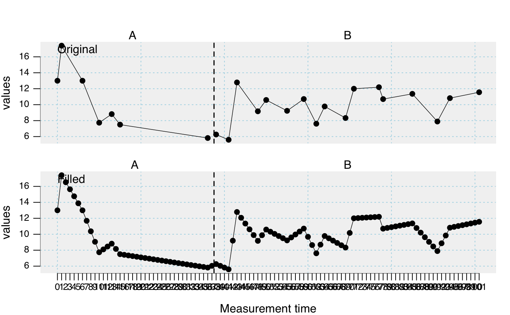
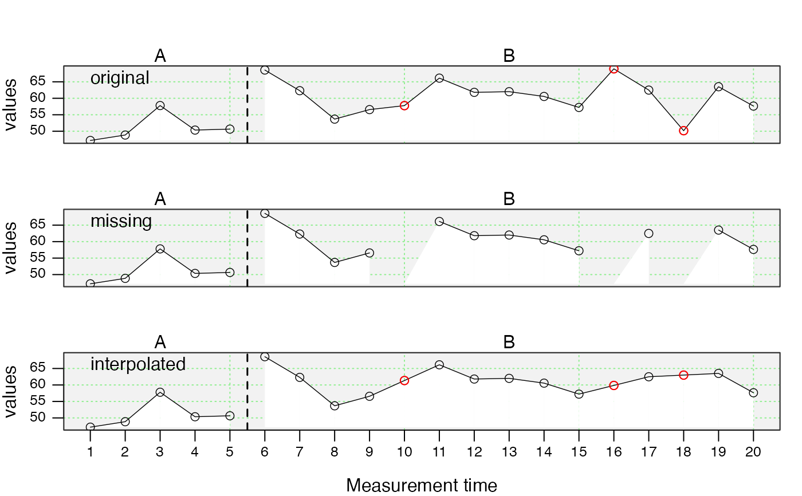

The fillmissing() function replaces missing measurements in single-case
data.
Arguments
- data
A single-case data frame. See
scdf()to learn about this format.- dvar
Character string with the name of the dependent variable. Defaults to the attributes in the scdf file.
- mvar
Character string with the name of the measurement time variable. Defaults to the attributes in the scdf file.
- na.rm
If set
TRUE,NAvalues are also interpolated. Default isna.rm = TRUE.
Value
A single-case data frame with interpolated missing data points. See
scdf() to learn about the SCDF Format.
Details
This procedure is recommended if there are gaps between measurement times
(e.g. MT: 1, 2, 3, 4, 5, ... 8, 9) or explicitly missing values in your
single-case data and you want to calculate overlap indices (overlap()) or a
randomization test (rand_test()).
See also
Other data manipulation functions:
add_l2(),
as.data.frame.scdf(),
as_scdf(),
moving_median(),
outlier(),
ranks(),
rescale(),
scdf(),
select_cases(),
set_vars(),
shift(),
smooth_cases(),
standardize(),
truncate_phase()
Examples
## In his study, Grosche (2011) could not realize measurements each
## single week for all participants. During the course of 100 weeks,
## about 20 measurements per person at different times were administered.
## Fill missing values in a single-case dataset with discontinuous
## measurement times
Grosche2011filled <- fill_missing(Grosche2011)
study <- c(Grosche2011[2], Grosche2011filled[2])
names(study) <- c("Original", "Filled")
plot(study)
#> Warning: This function is deprecated. It might be dropped without any further notice in a future update of scan.
#> Please use function 'scplot' from the package 'scplot' instead of 'plot'.
#> Warning: This function is deprecated. It might be dropped without any further notice in a future update of scan.
#> Please use function 'scplot' from the package 'scplot' instead of 'style_plot'.

## Fill missing values in a single-case dataset that are NA
Maggie <- random_scdf(design(level = list(0,1)), seed = 123)
Maggie_n <- Maggie
replace.positions <- c(10,16,18)
Maggie_n[[1]][replace.positions,"values"] <- NA
Maggie_f <- fill_missing(Maggie_n)
study <- c(Maggie, Maggie_n, Maggie_f)
names(study) <- c("original", "missing", "interpolated")
plot(study, marks = list(positions = replace.positions), style = "grid2")
#> Warning: This function is deprecated. It might be dropped without any further notice in a future update of scan.
#> Please use function 'scplot' from the package 'scplot' instead of 'plot'.
#> Warning: This function is deprecated. It might be dropped without any further notice in a future update of scan.
#> Please use function 'scplot' from the package 'scplot' instead of 'style_plot'.
